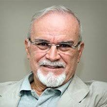
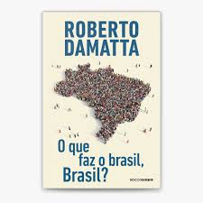

Autor em destaque
Todo mês um autor brasileiro recebe destaque no Livre Resenha, a fim de estimular a valorização de produções literárias nacionais.
Roberto Damatta
Roberto DaMatta nasceu em Niterói, no Rio de Janeiro, em 1936. É bacharel em História, especializado em Antropologia Social, Mestre e Doutor pela Universidade de Harvard. Lecionou no Museu Nacional da UFRJ e também na UFF, onde dirigiu o Programa de Pós-graduação em Antropologia Social e é professor titular de Antropologia Social da PUC-Rio e professor emérito da Universidade de Notre Dame, nos Estados Unidos. Em 2001, recebeu a Ordem do Mérito do Rio Branco no grau Comendador.
Escreveu quase duas dezenas de livros de não ficção e ensaios, em que se dedica, sobretudo, à análise e interpretação da sociedade brasileira. Atualmente, integra o quadro de colunistas de O Globo e do Estadão. O escritor e antropólogo revela em seus textos ângulos insuspeitos da vida social, sendo capaz de transpor a linguagem da cultura popular para o pensamento sistematizado, e trafega com notável desembaraço entre o mundo acadêmico e a escrita coloquial.
Ao lançar o clássico Carnavais, malandros e heróis: para uma sociologia do dilema brasileiro (Rocco, 1979), trouxe uma contribuição inovadora e definitiva para o entendimento do Brasil. Pela primeira vez, um antropólogo procurava entender a sociedade brasileira e suas desigualdades por meio da análise do carnaval e de outras festividades.
Já em O que faz o Brasil, Brasil? (Rocco, 1984), DaMatta examinou as manifestações culturais do país – carnavalescas, religiosas, alimentares, futebolísticas, comportamentais (o “jeitinho brasileiro”) – e demonstrou que através delas uma sociedade se expressa e pensa sobre si mesma. Escrito durante as quase duas décadas que viveu nos Estados Unidos, Toquevilleanas: notícias da América (Rocco, 2005) apresentou uma visão crítica dos Estados Unidos, numa coletânea de ensaios e memórias. Em sua obra, DaMatta ilumina a realidade brasileira, fustigando a acomodação do pensamento para gerar a reflexão.
Análise da obra: "O que faz o brasil, Brasil?
"O "brasil" com o b minúsculo é apenas um objeto sem vida, autoconsciência ou pulsação interior, pedaço de coisa que morre e não tem a menor condição de se reproduzir como sistema; como, aliás, querem alguns teóricos sociais do século XIX, que viam na terra - um pedaço perdido de Portugal e da Europa - um conjunto doentio e condenado de raças que, misturando-se ao sabor de uma natureza exuberante e de um clima tropical, estariam fadadas à degeneração e à morte biológica, psicológica e social."
“Mas o Brasil com B maiúsculo é algo muito mais complexo. É um país, cultura, local geográfico, fronteira e território reconhecidos internacionalmente, e também casa, pedaço de chão calçado com o calor de nossos corpos, lar, memória e consciência de um lugar com o qual se tem uma ligação especial, única, totalmente sagrada."
"Nós, brasileiros, somos um povo marcado e dividido pelas ordens tradicionais: o nome de família, o título de doutor, a cor da pele, o bairro onde moramos, o nome do padrinho, as relações pessoais, ser amigo do Rei, Chefe Político ou Presidente. Tudo isso nos classifica socialmente de modo irremediável. Jamais utilizamos o concurso público e a competição como algo normal entre nós, daí o trabalho que é fazer uma eleição honesta e disputada (fala-se, aqui, do Carnaval, exemplo de festa decidida pelo povo). Ela implica, inclusive, algo que evitamos: dar opiniões e disputar vontades, revelando abertamente as nossas mais legítimas (e ocultas) diferenciações sociais (...)”
Por que essa nossa relação com o futebol? O Futebol mostra-se como um código de integração.
O futebol ajuda uma coletividade altamente dividida internamente a afirmar-se como uma coletividade capaz de atuar de modo coordenado e de eventualmente vencer. Diferentemente da experiência vivenciada no cotidiano brasileiro - universo no qual as instituições de representação políticas estão há décadas desmoralizadas pela inflação e por práticas clientelistas.
Ao produzir um espetáculo complexo, mas governado por regras simples que todos conhecem, o futebol realiza simbolicamente que o melhor, o mais capaz pode efetivamente vencer. Que a aliança entre talento e desempenho pode conduzir à vitória. E melhor as regras valem para todos para os times comuns, para os times campeões, para ricos e para pobres, negros e brancos, sãos e doentes. O futebol nos dá uma lição de democracia, pois, conforme sabemos, vendo o nosso time jogar, as leis têm que ser obedecidas, pois são universais e transparentes.
O significado por trás das festividades nacionais:
Tanto a festa quanto a rotina são modos que a sociedade tem de exprimir-se, de atualizar-se concretamente, deixando ver a sua "alma" ou o seu coração. A cultura brasileira é rica em símbolos e significados presentes na vida cotidiana, expressos em festas religiosas, futebol, carnaval normalmente como fenômenos antagônicos. Para a maioria de nós, há sempre uma oscilação entre rotinas e festas, trabalho e feriado, despreocupações e "chateações", dias felizes e momentos dolorosos, vida e morte, os dias de "dureza" e "trabalho duro do mundo "real" e os dias de alegria e fantasia desse "outro lado da vida constituído pela festa, pelo feriado e pela ausência de trabalho para o outro (o patrão, o Governo, o chefe, o dono do negócio etc.).
O jeitinho brasileiro:
Os brasileiros se encontram em um dilema entre as leis universais que regem a sociedade e as situações em que cada pessoa se salva utilizando seus contatos pessoais e relações. Isso resulta em uma sociedade dividida entre o indivíduo e a pessoa, com a malandragem sendo tratada como uma forma brasileira de enfrentar essas contradições (não se pode generalizar nunca, por favor). O "jeitinho" brasileiro é uma maneira simpática e desesperada de relacionar o impessoal com o pessoal. É uma forma de encontrar uma solução entre a pessoa que solicita algo, o funcionário que representa a lei e a própria lei invocando relações pessoais ou outros fatores externos à situação.